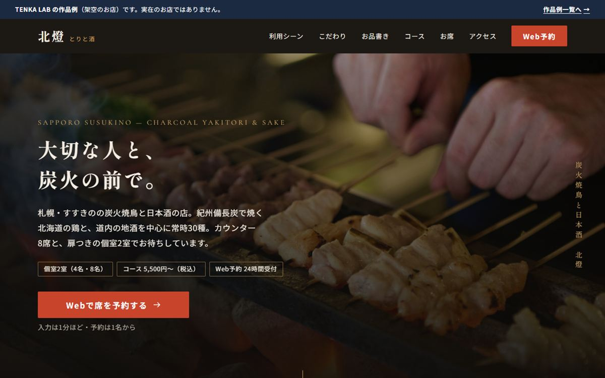
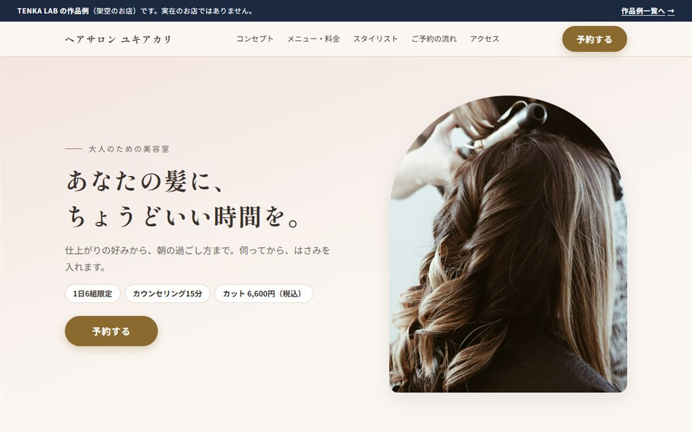
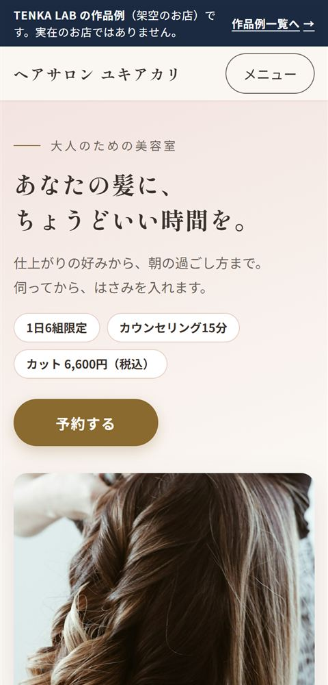
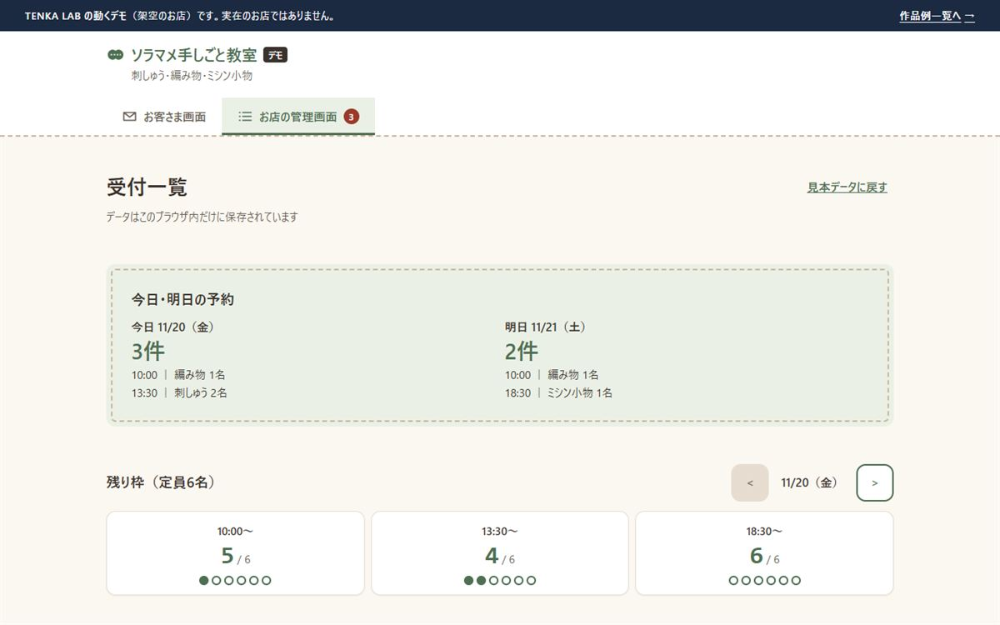
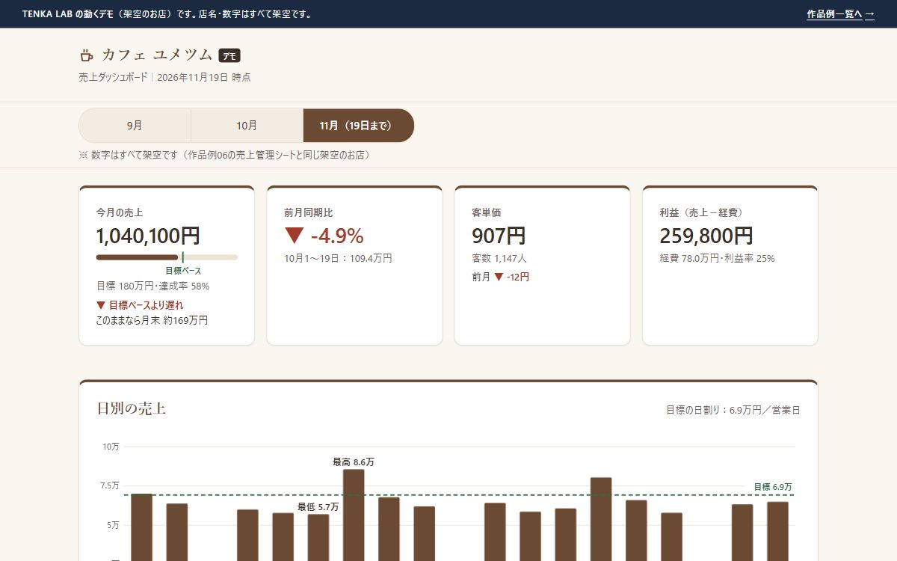
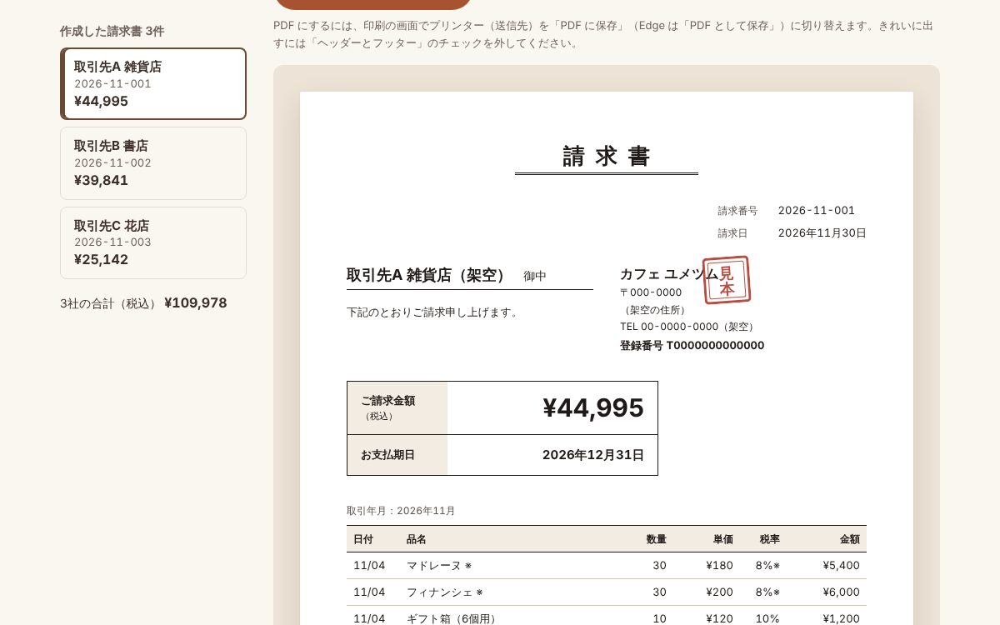
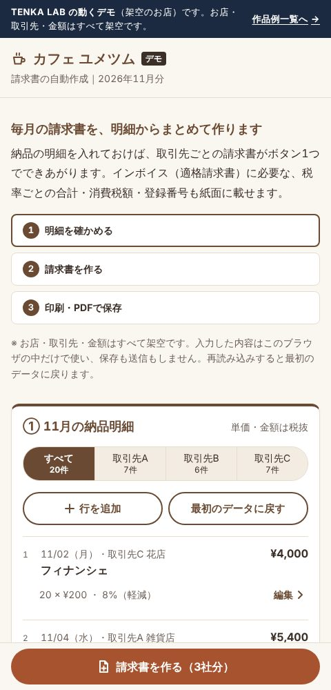

実在のサイト

制作実績 ／ 公式サイト
D-VIEW
経営支援サービスの公式サイト。3Dで動く見せ方を含め、設計・デザイン・実装を担当しました。
TENKA LAB
「作品例」の欄はすべて架空のお店です。「制作実績」の欄は実在のサイトです。
WORKS
予約につながる LP・ホームページから、売上の管理シート、予約やチャットの仕組みまで。公式サイトを設計から実装まで手がけた実績と、13店舗の経理を統括してきた経験をもとに、お店の数字まで考えて仕上げます。AIで早く形にして、ご確認と手直しに時間をかけます。



RESULTS
下の作品例とは別に、実際に公開されているサイトです。
制作実績 ／ 公式サイト
経営支援サービスの公式サイト。3Dで動く見せ方を含め、設計・デザイン・実装を担当しました。

制作実績 ／ 公式サイト
札幌のナイトクラブ／ライブハウスの公式サイト。設計・デザイン・実装を担当しました。
SAMPLES
店名・人名・数字はすべて架空です。実在のお店・お客様の実績ではありません。
WEBSITE

01 ／ 予約LP
焼鳥店の接待・宴会の予約を、スマホでその場で受けるページ
接待や少人数の宴会の店をスマホで探す会社員が、個室・コースの総額・キャンセルの決まりを確かめて、夜でもその場でWeb予約できるようにする。

02 ／ ホームページ
初めての方の不安を減らし、予約につなげる美容室のホームページ
初めての街で「失敗しない美容室」を探す方が、料金・雰囲気・スタイリストを確かめて、不安なく予約に進めるようにする。
SYSTEM

03 ／ AIチャット（動くデモ）
営業時間外の質問に答え、予約まで案内するチャット窓口
営業時間外や電話しにくいときでも、料金・初回の不安・駐車場・空き状況にその場で答え、予約ページまで案内する。お店の電話対応を減らし、予約の取りこぼしを防ぐ。
予約は送信されません。外部のサービスにはつながず、ページの中だけで動きます。


04 ／ 予約・問い合わせ管理（動くデモ）
電話・LINE・メールの予約を1つにまとめる、教室の受付管理
電話・LINE・メールに散らばりがちな予約と問い合わせを1つの画面にまとめ、「今日・明日の予約」と「残り枠」がスマホでひと目で分かるようにする。
デモを触ってみる（ソラマメ手しごと教室の予約・問い合わせ管理デモ）
入力内容は外部に送信されず、お使いのブラウザ内だけに保存されます。個人情報は入力しないでください。「見本データに戻す」で最初の状態に戻せます。


05 ／ 売上ダッシュボード（動くデモ）
売上管理シートの数字を、スマホでひと目で見られる画面に
忙しい店主・複数店舗の経営者が、今月の売上・目標の達成ペース・利益を、スマホを開いて数秒で分かるようにする。
デモを触ってみる（カフェ ユメツムの売上ダッシュボードのデモ）
数字はすべて架空です。作品例06の売上管理シートと同じ架空のお店です。
06 ／ 売上管理シート（Excel）
毎日入れるだけで、月の売上・利益・目標の達成が分かる管理シート
毎日の売上と経費を入れるだけで、月ごとの売上・利益・目標の達成具合が分かるようにし、店主が数字で判断できるようにする。
Excel ファイルをダウンロード（カフェ ユメツムの売上管理シート、xlsx 形式）
xlsx 形式・約72KB。Excel または Google スプレッドシートで開けます。


07 ／ 請求書の自動作成（動くデモ）
納品の明細から、取引先ごとの請求書をボタン1つで
小さなお店・個人事業の経理担当が、月末に取引先ごとに手で作っている請求書を、明細を確かめてボタンを押すだけで作れるようにする。インボイス（適格請求書）に必要な登録番号・税率ごとの合計と消費税額も紙面に載せる。
入力内容は保存も送信もされず、再読み込みで最初のデータに戻ります。請求書には「見本」の印が入ります。作品例05・06と同じ架空のお店です。


08 ／ 勤怠・出勤簿の自動集計（動くデモ）
3店舗・8人の打刻から、月の集計と出勤簿を自動で
複数のお店を持つ飲食店・小売店で、店長や経理担当が月末に手で数えている実働・残業・深夜の時間と出勤簿づくりを、打刻の記録から自動にする。打刻を直すときは理由と履歴が残るようにする。
デモを触ってみる（カフェ ユメツムの勤怠・出勤簿の自動集計デモ）
修正は保存も送信もされず、再読み込みで最初のデータに戻ります。残業・深夜の数え方はデモの仮定です。給与の金額は出しません。作品例05〜07と同じ架空のお店です。


09 ／ お店のページ更新（動くデモ）
店主さんがスマホで、休み・売り切れ・お知らせを書き換えられるお店のページ
ホームページが無い、または作ったきりで更新できていない小さなお店に、「休み・売り切れ・お知らせ」を店主さんが自分で変えられる形を、触って確かめてもらう。
デモを触ってみる（定食と惣菜 ユキマドのお店のページ更新デモ）
変更はお使いのブラウザの中だけに保存され、どこにも送信されません。実際のお店のページの作り方はご相談のうえご提案します。
CONTACT
店舗のLP・ホームページ、売上・経費の管理シートや業務システムのご相談は、このページをご覧になったサイトのメッセージ機能からお気軽にどうぞ。